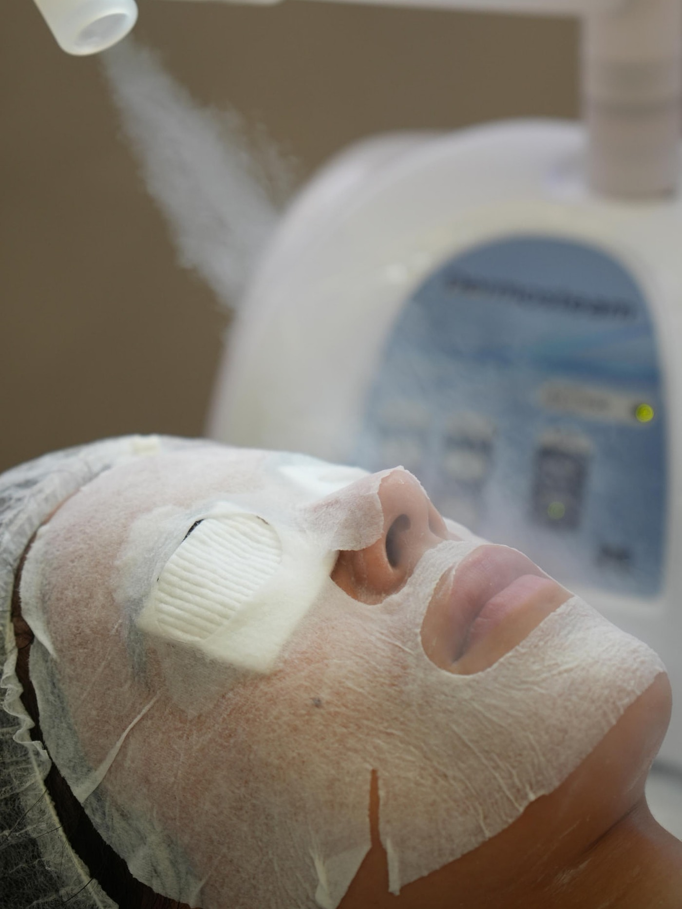
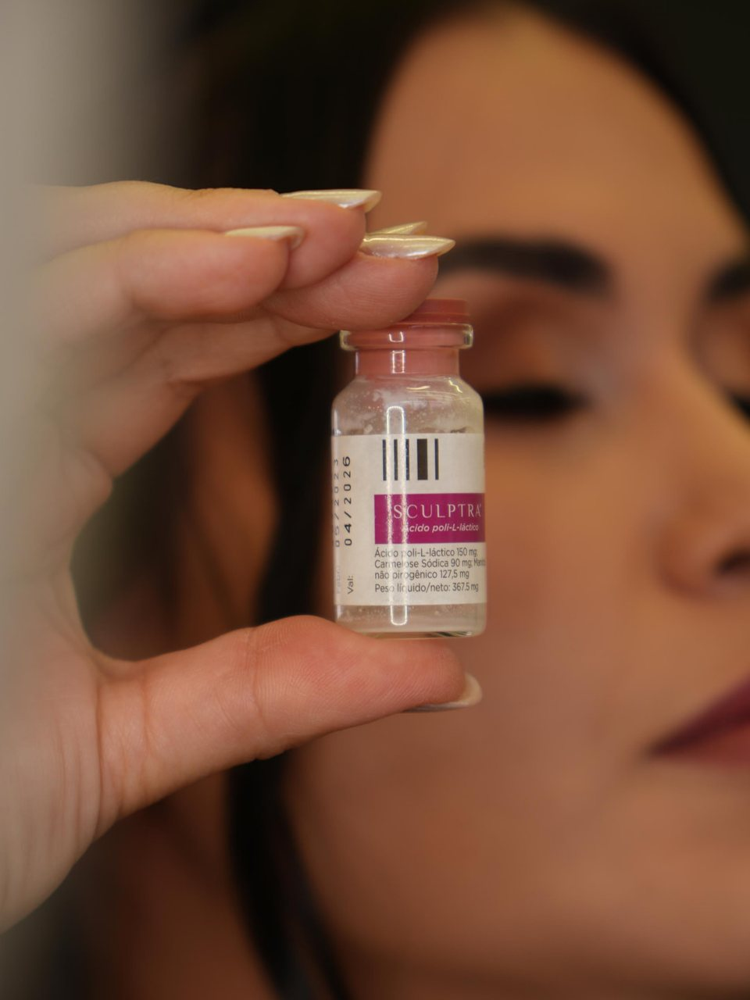
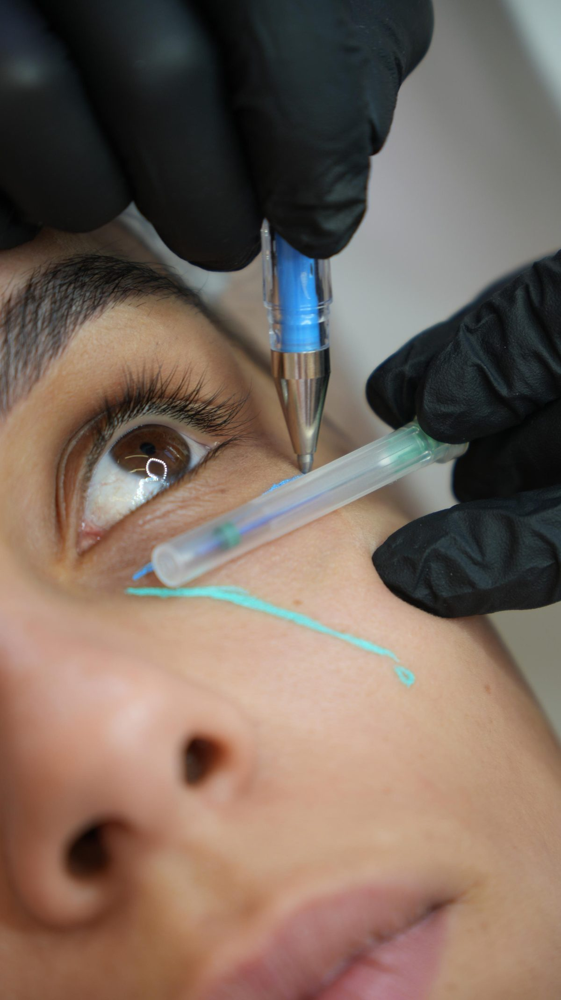
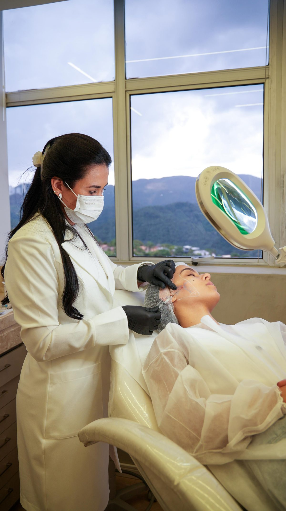
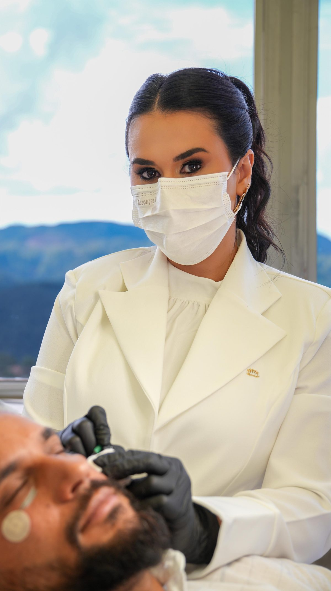
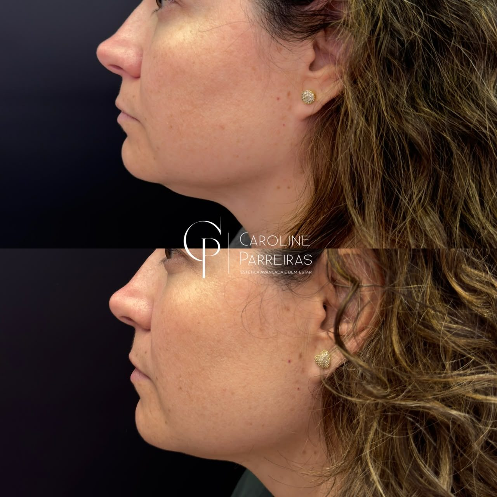
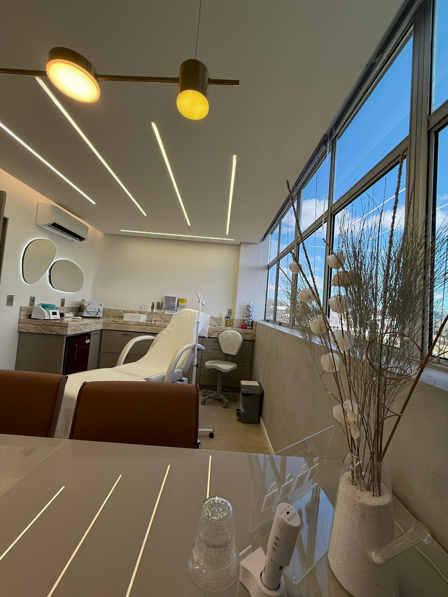
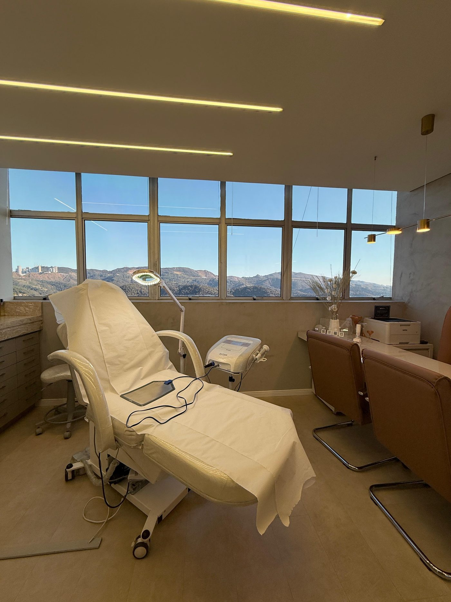
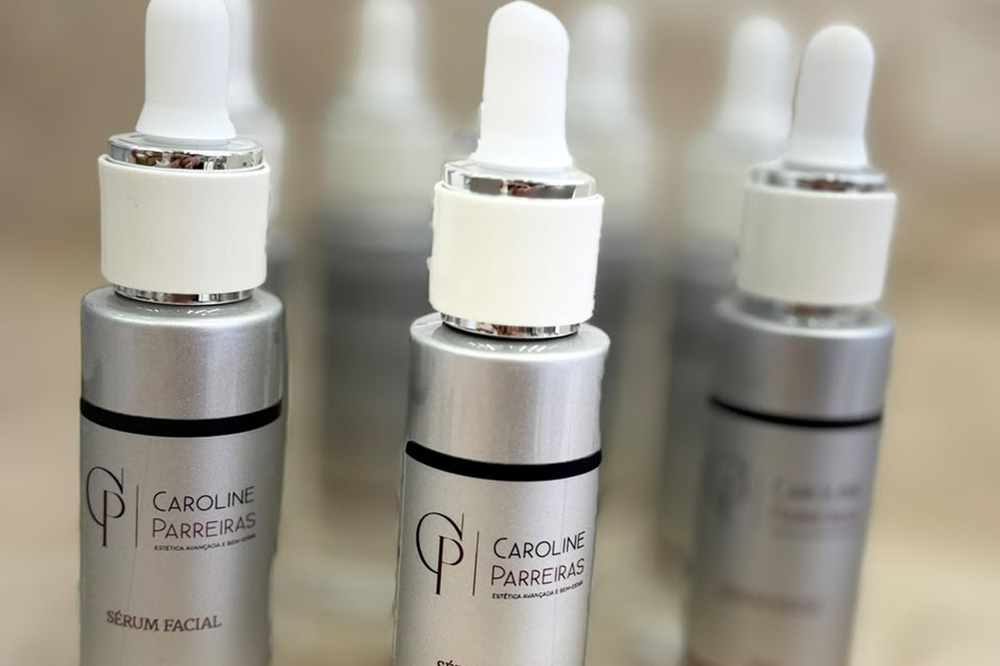
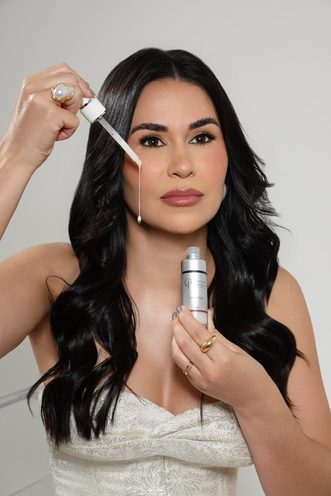

Estética avançada e bem-estar · Nova Lima
Mais segurança para se olhar no espelho começa com o cuidado certo.
Para quem deseja cuidar de manchas, acne, cravos, sensibilidade, perda de viço e sinais de flacidez com indicação profissional e cuidado individualizado, do diagnóstico ao pós-procedimento.
Fale pelo WhatsApp e tire suas dúvidas antes de agendar.



Quando a pele muda, repetir as mesmas tentativas nem sempre resolve.
Manchas que persistem, acne adulta, cravos recorrentes, sensibilidade, perda de viço e sinais de flacidez podem fazer você sentir que nada funciona, mesmo depois de testar produtos, rotinas e procedimentos diferentes.
E isso vai além da aparência. Pode fazer você depender mais da maquiagem, evitar fotos, sentir desconforto ao se olhar no espelho ou simplesmente não se reconhecer como antes.
O problema nem sempre é falta de cuidado. Muitas vezes, é não saber com clareza o que a sua pele precisa neste momento.
Sua pele não precisa de mais uma tentativa. Precisa de um cuidado com direção.
O Gerenciamento de Pele da Caroline Parreiras foi pensado para quem quer cuidar da própria imagem com mais segurança e estratégia.
Em vez de escolher produtos e procedimentos no impulso, você conta com avaliação profissional para entender suas queixas, indicação dos cuidados mais adequados e acompanhamento em cada etapa do atendimento.
O objetivo é ajudar você a construir uma pele com aparência mais equilibrada, viçosa e bem cuidada, respeitando as necessidades e o momento da sua pele.
Estímulo de colágeno e cuidado da flacidez
Melhora do viço e da textura da pele
Atenção a manchas e sinais de envelhecimento
Cuidados para acne, cravos e oleosidade
Protocolos para peles sensíveis e sensibilizadas
Tratamentos faciais, corporais e capilares, quando indicados
Os procedimentos realizados são definidos de forma individual, após avaliação e entendimento da necessidade de cada paciente.
Quero conversar sobre a minha pelePor que escolher a Caroline
Estética avançada é técnica, responsabilidade e cuidado em cada etapa.
Realizar um procedimento é só uma parte do atendimento. O que faz diferença é a escuta da sua necessidade, a indicação responsável e o suporte que continua depois que você sai da clínica.
Aqui, o cuidado não é baseado em tendência ou tentativa. É conduzido com técnica, critério e responsabilidade em cada etapa.

Mais segurança para cuidar da sua imagem
Escuta da sua queixa antes de qualquer indicação.
Tratamento direcionado para queixas específicas
Protocolos definidos a partir da sua necessidade real.
Atenção à firmeza e aos sinais do tempo
Cuidado pensado para o momento atual da sua pele.
Formação e especialização
Residência em estética avançada, especialidade em gerenciamento de pele e atuação em saúde estética facial, corporal e capilar.
Produtos regularizados pela Anvisa
Sem hiperdiluição, com procedência apresentada a você.
Suporte pré e pós-procedimento pelo WhatsApp
Acompanhamento que continua depois do atendimento.
Como funciona
Seu cuidado começa com uma conversa.
- 01
Entre em contato pelo WhatsApp
Envie uma mensagem, conte brevemente o que gostaria de cuidar e tire suas primeiras dúvidas.
- 02
Agende seu atendimento
Os horários disponíveis são verificados e o seu agendamento é organizado conforme sua disponibilidade.
- 03
Entenda o cuidado indicado para você
Sua necessidade é avaliada para que o procedimento ou protocolo seja indicado de forma individual.
- 04
Realize seu procedimento
Você recebe um atendimento técnico, acolhedor e direcionado para a queixa que deseja cuidar.
- 05
Conte com suporte no pós-procedimento
O WhatsApp fica à disposição para dúvidas, com retorno para saber como você está.

Registros de atendimentos reais.
Resultados variam de acordo com a pele, o histórico e a adesão de cada pessoa ao cuidado indicado.




Depoimentos
Quem já foi atendida conta a experiência.
A Carol é uma excelente profissional! Super dedicada, esclarece todas as dúvidas com muita gentileza. Me ajudou a recuperar minha autoestima e não mede esforços para garantir um bom resultado. Adorei e super indico!
Fernanda LeiteAvaliação no Google Gostei muito da experiência! Desde o primeiro contato fui super bem atendido, tudo bem claro e sem complicação. Fiquei bem satisfeito com o resultado, superou o que eu esperava. Com certeza voltaria e indico sem pensar duas vezes!
Matheus OliveiraAvaliação no Google Amei minha experiência, todos os procedimentos que fiz me senti muito segura e acolhida. O espaço é super aconchegante e a Carol uma profissional muito segura no que faz.
Michelle AlvesAvaliação no Google Primeira vez fazendo uma limpeza de pele com a Caroline, foi uma experiência única. Local aconchegante, ela te explica com clareza e dá o suporte necessário antes e depois do atendimento. Muito atenciosa e profissional no que faz. Muito satisfeito e com certeza voltarei mais vezes.
Roni FonsecaAvaliação no Google A Caroline é uma profissional extremamente competente e atenciosa, possui muita experiência e qualificação. É evidente o quanto ela entende de estética e passa muita segurança. Além da clínica ser impecável do ponto de vista estético e higiênico. Fiquei muito satisfeita e pretendo fazer outros procedimentos. Recomendo com muita confiança.
Michelle FariaAvaliação no Google Fui muito bem atendida desde o primeiro contato! A Carol é atenciosa e transmite muita segurança, explicando cada etapa do procedimento com clareza e profissionalismo. Fiz limpeza de pele e peeling e fiquei extremamente satisfeita com o resultado. Recomendo demais para quem busca qualidade, responsabilidade e um atendimento de excelência.
Luana BorgesAvaliação no Google Sempre tive muito receio em realizar procedimentos. Na avaliação com a Carol, ela foi super atenciosa, minuciosa e extremamente profissional. Me senti muito segura. O pós-atendimento dela é diferenciado: não é uma profissional que só realiza o procedimento e pronto, ela acompanha depois. O consultório é lindo, aconchegante, extremamente limpo e organizado.
Cinthia FonsecaAvaliação no Google A Carol é uma excelente profissional, atenciosa e justa. Demonstra muita confiança e tranquilidade, seu atendimento é humanizado. Fiquei encantada com a primeira consulta e com o espaço. Realizei vários procedimentos com ela e estou gostando dos resultados. Super recomendo!
Fernanda GuerraAvaliação no Google Minha experiência com a Caroline foi maravilhosa. Ela explicou com detalhes o procedimento, demonstrou a procedência dos produtos e ainda me orientou sobre as necessidades e características da minha pele. O resultado foi excelente! Recomendo a profissional!
Elaine MoraesAvaliação no Google

Sobre a especialista
Caroline Parreiras
Especialista em estética avançada e bem-estar, com residência em estética avançada, especialidade em gerenciamento de pele e atuação em saúde estética facial, corporal e capilar.
Em mais de 5 anos de atuação, mais de 800 pacientes foram atendidos com o mesmo cuidado: entender a queixa, indicar o que faz sentido para aquela pele e acompanhar o resultado ao longo do tempo.
O trabalho é conduzido com produtos regularizados pela Anvisa, sem hiperdiluição, e com suporte pelo WhatsApp antes e depois de cada procedimento.
Localização e contato
Atendimento em Nova Lima, Minas Gerais.
- WhatsApp+55 31 9 7167 8983
- Instagram@carolineparreirasestetica
- AtendimentoSomente com agendamento prévio, conforme disponibilidade de horários.
Dúvidas frequentes
Ainda com dúvidas antes de agendar?
Se a sua pergunta não estiver aqui, pode enviar pelo WhatsApp. Você recebe uma resposta antes de decidir qualquer coisa.
A indicação é feita após avaliação. Suas queixas, histórico e características da pele são analisados para que o cuidado seja definido de forma individual, e não por padrão.
Sim. Peles sensíveis ou sensibilizadas por produtos e procedimentos anteriores recebem protocolos específicos, com progressão respeitando a barreira cutânea.
Depende da queixa, do tipo de pele e da adesão ao cuidado indicado. Alguns resultados aparecem já nas primeiras sessões, outros exigem um protocolo mais longo. Isso é explicado na avaliação, sem promessa de resultado.
São produtos regularizados pela Anvisa, sem hiperdiluição, e a procedência é apresentada a você durante o atendimento.
Sim. O suporte pelo WhatsApp fica disponível para dúvidas no pré e no pós-procedimento, com retorno para saber como está a sua pele.
O agendamento é feito pelo WhatsApp. Você envia uma mensagem, conta o que gostaria de cuidar e recebe as opções de horário disponíveis.
Próximo passo
Cuidar da sua pele pode ser mais simples do que parece.
Envie uma mensagem, conte o que gostaria de cuidar e entenda qual caminho faz sentido para a sua pele neste momento.
Atendimento por agendamento — Nova Lima, MG.